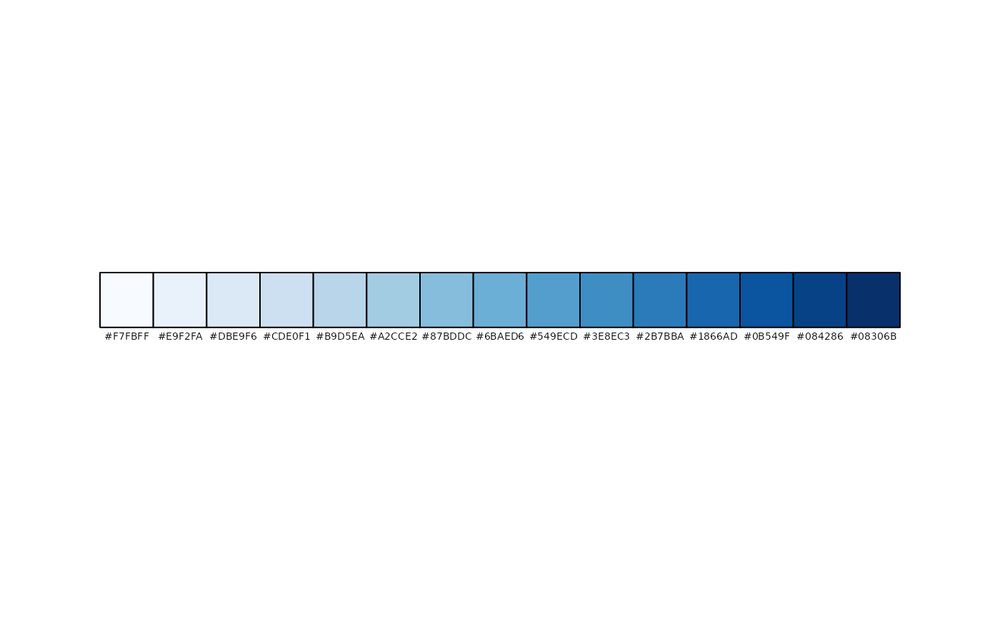
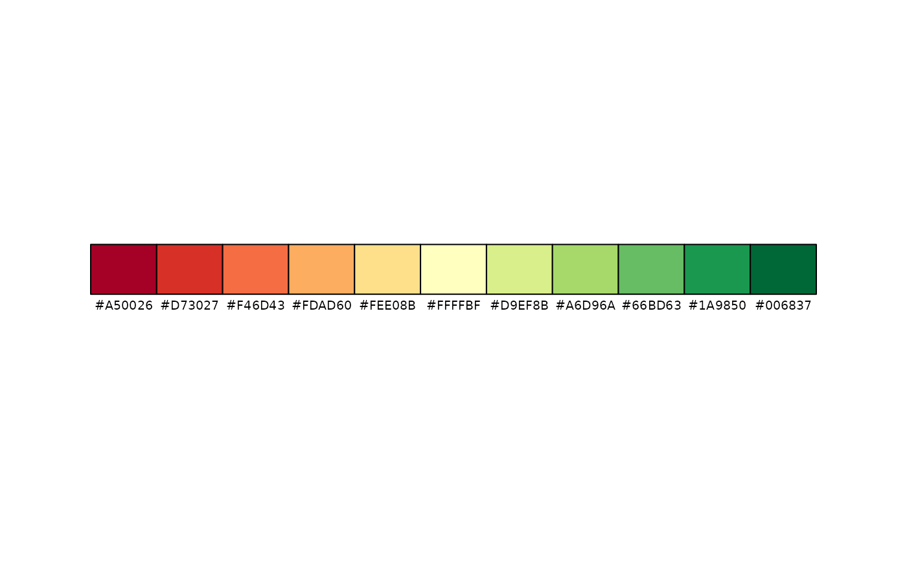
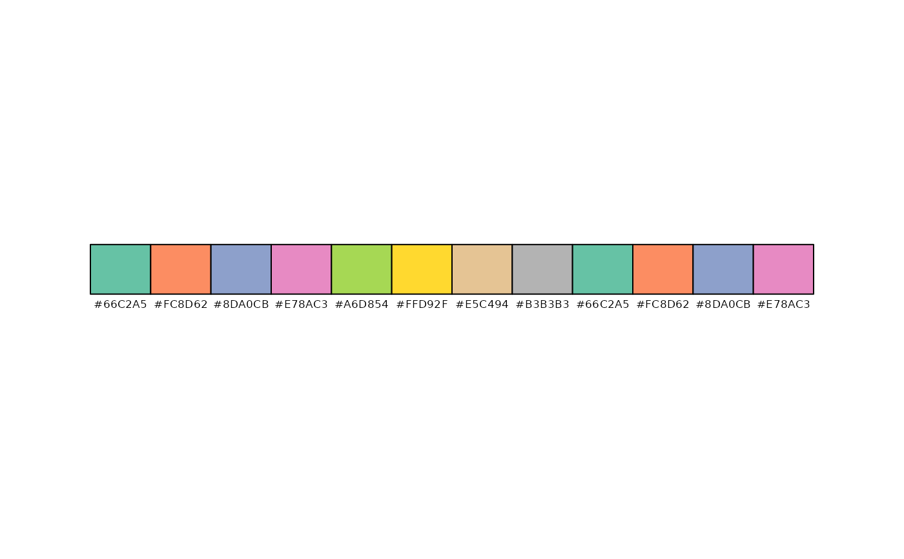

Get and plot a (modified) palette from Color Brewer. In addition to the base function brewer.pal, a palette can be created for any number of classes. The contrast of the palette can be adjusted for sequential and diverging palettes. For categorical palettes, intermediate colors can be generated. An interactive tool that uses this function is palette_explorer.
Arguments
- palette
name of the color brewer palette. Run
palette_exploreror seebrewer.palfor options.- n
number of colors
- contrast
a vector of two numbers between 0 and 1 that defines the contrast range of the palette. Applicable to sequential and diverging palettes. For sequential palettes, 0 stands for the leftmost color and 1 the rightmost color. For instance, when
contrast=c(.25, .75), then the palette ranges from 1/4 to 3/4 of the available color range. For diverging palettes, 0 stands for the middle color and 1 for both outer colors. If only one number is provided, the other number is set to 0. The default value depends onn. See details.- stretch
logical that determines whether intermediate colors are used for a categorical palette when
nis greater than the number of available colors.- plot
should the palette be plot, or only returned? If
TRUEthe palette is silently returned.
Details
The default contrast of the palette depends on the number of colors, n, in the following way. The default contrast is maximal, so (0, 1), when n = 9 for sequential palettes and n = 11 for diverging palettes. The default contrast values for smaller values of n can be extracted with some R magic: sapply(1:9, tmaptools:::default_contrast_seq) for sequential palettes and sapply(1:11, tmaptools:::default_contrast_div) for diverging palettes.
Examples
get_brewer_pal("Blues")
get_brewer_pal("Blues", contrast=c(.4, .8))
get_brewer_pal("Blues", contrast=c(0, 1))
get_brewer_pal("Blues", n=15, contrast=c(0, 1))

get_brewer_pal("RdYlGn")
get_brewer_pal("RdYlGn", n=11)

get_brewer_pal("RdYlGn", n=11, contrast=c(0, .4))
get_brewer_pal("RdYlGn", n=11, contrast=c(.4, 1))
get_brewer_pal("Set2", n = 12)
get_brewer_pal("Set2", n = 12, stretch = FALSE)
